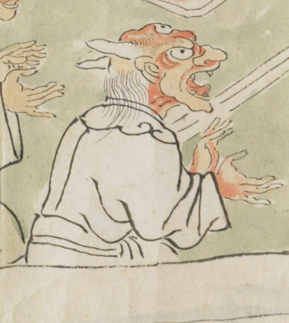

赤い顔をした鬼。頭には2本の鋭い角が生え、額には目玉がある。白い衣服をきており、手をたたいているようである。大きく口をひらき、なにかを歌っているようでもある。
出典：親書誌：U426_nichibunken_0079：酒天童子絵巻；シュテンドウジエマキ／日付：2006／資源識別子：U426_nichibunken_0079_0006_0002
Copyright (c)2010- International Research Center for Japanese Studies, Kyoto, Japan. All rights reserved.